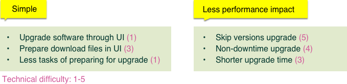
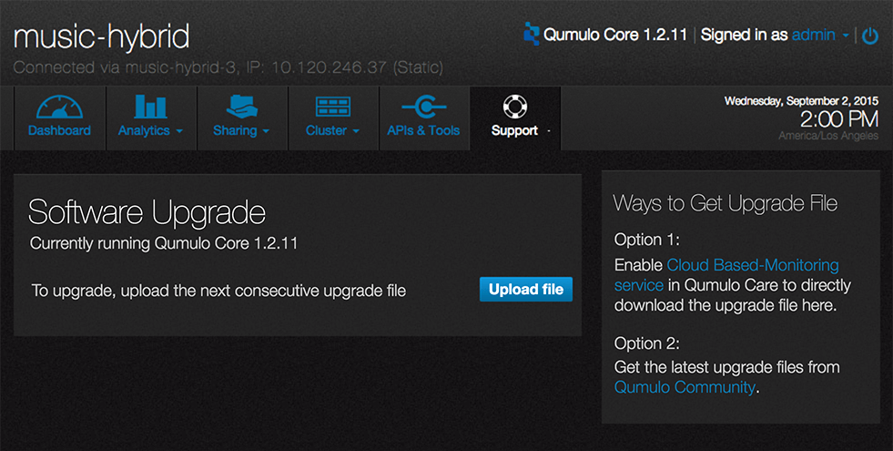

Software Upgrade
Project Introduction
With the improved software upgrade experience, users of Qumulo product would be more likely to upgrade often, thus to reduce the company's maintenance cost because there will be bug fixes and new features in each software release.
Role
UX Designer
Duration
3 Months (Feb&April/2016)
Skills
Interaction design, Usability testing
Problem
It was a long and error prone process for users to upgrade software. Every time when users upgrading the software, they needed to set up a series of scripts and ran it through command lines. Because there is a release of software every two weeks, it was very challenging for most users to keep up with the newest update.
Goal of Design
Design an experience that enable users Gerald upgrade software through web UI easily and quickly instead of using CML. By improving their upgrade experience, we hope to users upgrade more often thus to reduce the company's maintenance.
Design Process
As the UX designer of this project, I was overseeing UX from the conception stage to launch. Collaborating with the dev team and PM, I started conducting user interviews to research on what users pain points are and what their ideal upgrade experience would be like. Later these findings guided me on prototyping and usability tests.
1. User Research
I started interviewing customers through phone calls and asked them what their current upgrade experience was and how they would like it to be improved.
Users Pain Points
There was no user interface for them to perform upgrade. Using command line took a long time as well as increased the chances of making mistakes.
The upgrade cost at least 15 mins system down time. It became impossible for some users to upgrade in their work environment because they need to user the system 24*7. There is almost no down time allowed in their work environment.
Users Expectations
Simple - all of our users want to have upgrade in the UI, possibly be able to just click the button and finish upgrade in minutes.
Less performance impact - have non-disruptive upgrade or allowing skipping version upgrade will help because it is painful for them to schedule upgrade time every other week especially during busy production time.
2. Idea Exploration
I explored several upgrade options based on the research findings.
Option 1
Users can download the upgrade files within the software. Once the upgrade file is downloaded, they can click upgrade and finish upgrade in minutes.
Option1 - Ready to be downloaded
Option1 - Downloading
Option1 - Ready to start upgrade
Option 2
Users can download the upgrade files from dropbox. They can upload the files and start upgrade once they logged into software.
Option2 - Ready for uploading
Option2 - Uploading
Option2 - Ready to start upgrade
3. Define Solution
The designs ideas I explored require tremendous engineering work. It is very hard for engineers to build at once. So we need to break it down into several milestones so engineering team can build it incrementally. Collaborating with PM and engineers, I defined the scope of FSV(first sellable version) as well as its relevant user stories in prioritized order.
4. Usability Testing
We conducted usability tests with 5 customers. In general, users could finish the task successfully and quickly. But we do found some improvements.
Usability Findings
- Users would like to use file browser to pick the files instead of typing path into the field.
- The instructions were not clear about where users should upload the file to.
- Users expressed strong desire that the upgrading time needs to be as short as possible so their system would not have long down time.
5. Final Design

Final design - Software Upgrade
Final design - Confirmation

Final design - Upgrading
Measurement of Project Success
1. Users Quotes
Here are quotes from one of our users:
“There is no system that I can upgrade and reboot in like 1 minute…everything is working as advertised”
Upgrades were all a success.. Great job with incorporating the upgrade process to the UI. Made this activity so easy.
2. Upgrade frequency
There were less than 50% of our users keeping their software up-to-date before we launched the software upgrade page. Since we launched the software upgrade page in May, users have started upgrading more often. Now 85% of our users keep their software up-to-date.
More projects
Seattle, U.S.
(206) 953 5592
joyce90829@gmail.com